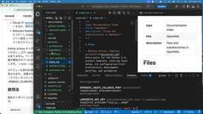

Generative Agents Tech Blog
https://blog.generative-agents.co.jp/
Generative Agents Tech Blog
フィード

「AIエージェントキャッチアップ #84 - OpenWiki」を開催しました
Generative Agents Tech Blog
ジェネラティブエージェンツの大嶋です。 「AIエージェントキャッチアップ #84 - OpenWiki」という勉強会を開催しました。 generative-agents.connpass.com アーカイブ動画はこちらです。 www.youtube.com OpenWiki 今回は、エージェントのWikiの作成・管理のためのCLI「OpenWiki」をキャッチアップしました。 OpenWikiのGitHubリポジトリはこちらです。 github.com 今回のポイント OpenWikiとは OpenWikiは、LangChainが公開した、エージェントのWikiを生成・管理するオープンソースの…
7日前

「AIエージェントキャッチアップ #83 - AgentSpace」を開催しました
Generative Agents Tech Blog
ジェネラティブエージェンツの大嶋です。 「AIエージェントキャッチアップ #83 - AgentSpace」という勉強会を開催しました。 generative-agents.connpass.com アーカイブ動画はこちらです。 www.youtube.com AgentSpace 今回は、人間とエージェントのチームのためのコラボレーションワークスペース「AgentSpace」をキャッチアップしました。 AgentSpaceのGitHubリポジトリはこちらです。 github.com 今回のポイント AgentSpaceとは AgentSpaceは、人間とエージェントのチームのための「エージェ…
13日前
「AIエージェントキャッチアップ #82 - Open Knowledge Format」を開催しました
Generative Agents Tech Blog
ジェネラティブエージェンツの大嶋です。 「AIエージェントキャッチアップ #82 - Open Knowledge Format」という勉強会を開催しました。 generative-agents.connpass.com アーカイブ動画はこちらです。 www.youtube.com Open Knowledge Format 今回は、Googleが公開したマークダウン形式の知識表現フォーマット「Open Knowledge Format（OKF）」をキャッチアップしました。 OKFのGitHubリポジトリはこちらです。 github.com 紹介ブログはこちらです。 cloud.google.…
1ヶ月前
「AIエージェントキャッチアップ #81 - DeepEval」を開催しました
Generative Agents Tech Blog
ジェネラティブエージェンツの大嶋です。 「AIエージェントキャッチアップ #81 - DeepEval」という勉強会を開催しました。 generative-agents.connpass.com アーカイブ動画はこちらです。 www.youtube.com DeepEval 今回は、オープンソースのLLM評価フレームワーク「DeepEval」をキャッチアップしました。 DeepEvalのGitHubリポジトリはこちらです。 github.com ドキュメントはこちらです。 deepeval.com 今回のポイント DeepEvalとは DeepEvalは、LLMアプリケーションの評価のOSSで…
1ヶ月前
「AIエージェントキャッチアップ #80 - agentOS」を開催しました
Generative Agents Tech Blog
ジェネラティブエージェンツの大嶋です。 「AIエージェントキャッチアップ #80 - agentOS」という勉強会を開催しました。 generative-agents.connpass.com アーカイブ動画はこちらです。 www.youtube.com agentOS 今回は、AIエージェントのためのポータブルなオペレーティングシステム「agentOS」をキャッチアップしました。 agentOSのGitHubリポジトリはこちらです。 github.com Webサイトはこちらです。 www.rivet.dev ドキュメントはこちらです。 rivet.dev 今回のポイント agentOSとは…
2ヶ月前
「AIエージェントキャッチアップ #79 - OneManCompany」を開催しました
Generative Agents Tech Blog
ジェネラティブエージェンツの大嶋です。 「AIエージェントキャッチアップ #79 - OneManCompany」という勉強会を開催しました。 generative-agents.connpass.com アーカイブ動画はこちらです。 www.youtube.com OneManCompany 今回は、一人の会社のためのエージェントオペレーティングシステム「OneManCompany」をキャッチアップしました。 OneManCompanyのGitHubリポジトリはこちらです。 github.com ドキュメントはこちらです。 1mancompany.github.io Webサイトはこちらです…
2ヶ月前
「AIエージェントキャッチアップ #78 - Meta-Harness」を開催しました
Generative Agents Tech Blog
ジェネラティブエージェンツの大嶋です。 「AIエージェントキャッチアップ #78 - Meta-Harness」という勉強会を開催しました。 generative-agents.connpass.com アーカイブ動画はこちらです。 www.youtube.com Meta-Harness 今回は、タスク固有のハーネスを自動探索する「Meta-Harness」をキャッチアップしました。 Meta-HarnessのGitHubリポジトリはこちらです。 github.com 論文はこちらです。 arxiv.org 今回のポイント Meta-Harnessとは Meta-Harnessは、AIエージ…
2ヶ月前
「AIエージェントキャッチアップ #77 - Codex App Server」を開催しました
Generative Agents Tech Blog
ジェネラティブエージェンツの大嶋です。 「AIエージェントキャッチアップ #77 - Codex App Server」という勉強会を開催しました。 generative-agents.connpass.com アーカイブ動画はこちらです。 www.youtube.com Codex App Server 今回は、Codexのハーネスをサーバー化した「Codex App Server」をキャッチアップしました。 Codex App Serverのドキュメントはこちらです。 developers.openai.com OpenAIによる解説記事はこちらです。 openai.com 実装はCode…
2ヶ月前
「AIエージェントキャッチアップ #76 - Open Data Spaces (ODS)」を開催しました
Generative Agents Tech Blog
ジェネラティブエージェンツの大嶋です。 「AIエージェントキャッチアップ #76 - Open Data Spaces (ODS)」という勉強会を開催しました。 generative-agents.connpass.com アーカイブ動画はこちらです。 www.youtube.com Open Data Spaces (ODS) 今回は、エージェンティックAI時代に向けて設計された分散データ管理アーキテクチャ「Open Data Spaces (ODS)」をキャッチアップしました。 ODSのWebサイトはこちらです。 www.ipa.go.jp ドキュメントはこちらです。 open-datas…
2ヶ月前
「AIエージェントキャッチアップ #75 - Hermes Agent」を開催しました
Generative Agents Tech Blog
ジェネラティブエージェンツの大嶋です。 「AIエージェントキャッチアップ #75 - Hermes Agent」という勉強会を開催しました。 generative-agents.connpass.com アーカイブ動画はこちらです。 www.youtube.com Hermes Agent 今回は、ユーザーとともに成長するAIエージェント「Hermes Agent」をキャッチアップしました。 Hermes AgentのGitHubリポジトリはこちらです。 github.com 公式サイトはこちらです。 hermes-agent.nousresearch.com 今回のポイント Hermes A…
3ヶ月前
コーディングエージェントにOWASP ASVSレベルを伝えると、生成コードのセキュリティは変わるのか
Generative Agents Tech Blog
コーディングエージェントの評価基盤を開発している的場です。今回は、その活動の中で得た知見の一つ「コーディングエージェントにOWASP ASVSのレベルを伝えるだけで、生成コードのセキュリティが向上する可能性がある」という話を紹介します。 なお、本知見は、あくまで1ケースの実験結果に基づくものです。釈迦に説法ではありますが、どのような場面、どのようなエージェントでも適用可能な知見ではないため、ご自身の環境で検証をお願いします。
3ヶ月前
「AIエージェントキャッチアップ #74 - NemoClaw」を開催しました
Generative Agents Tech Blog
ジェネラティブエージェンツの大嶋です。 「AIエージェントキャッチアップ #74 - NemoClaw」という勉強会を開催しました。 https://generative-agents.connpass.com/event/390939/generative-agents.connpass.com アーカイブ動画はこちらです。 www.youtube.com NemoClaw 今回は、OpenClawのような常時稼働アシスタントをより安全に実行するためのNVIDIAの「NemoClaw」をキャッチアップしました。 NemoClawのGitHubリポジトリはこちらです。 github.com 公…
3ヶ月前
「AIエージェントキャッチアップ #73 - nanobot」を開催しました
Generative Agents Tech Blog
ジェネラティブエージェンツの大嶋です。 「AIエージェントキャッチアップ #73 - nanobot」という勉強会を開催しました。 https://generative-agents.connpass.com/event/390044/generative-agents.connpass.com アーカイブ動画はこちらです。 www.youtube.com nanobot 今回は、OpenClawにインスパイアされた超軽量パーソナルAIアシスタント「nanobot」をキャッチアップしました。 nanobotのGitHubリポジトリはこちらです。 github.com 公式ドキュメントはこちらで…
3ヶ月前
「AIエージェントキャッチアップ #72 - OpenClaw」を開催しました
Generative Agents Tech Blog
ジェネラティブエージェンツの大嶋です。 「AIエージェントキャッチアップ #72 - OpenClaw」という勉強会を開催しました。 https://generative-agents.connpass.com/event/389355/generative-agents.connpass.com アーカイブ動画はこちらです。 www.youtube.com OpenClaw 今回は、ユーザーのデバイス上で動作するパーソナルAIアシスタント「OpenClaw」をキャッチアップしました。 OpenClawのGitHubリポジトリはこちらです。 github.com 公式ドキュメントはこちらです。…
4ヶ月前
「AIエージェントキャッチアップ #71 - OpenShell」を開催しました
Generative Agents Tech Blog
ジェネラティブエージェンツの大嶋です。 「AIエージェントキャッチアップ #71 - OpenShell」という勉強会を開催しました。 https://generative-agents.connpass.com/event/388576/generative-agents.connpass.com アーカイブ動画はこちらです。 www.youtube.com OpenShell 今回は、AIエージェントのためのランタイム「OpenShell」をキャッチアップしました。 OpenShellのGitHubリポジトリはこちらです。 github.com 公式ドキュメントはこちらです。 docs.n…
4ヶ月前
エージェントハーネスという言葉はどこから生まれたのか？
Generative Agents Tech Blog
ここ最近、AIエージェント周りの技術について「エージェントハーネス」という言葉がよく話題になります。 よく話題になります、というか、西見自身も外部のメディアで記事を書かせていただいています。 codezine.jp しかしこの「エージェントハーネス」という言葉、そもそもどこからやってきた言葉なのでしょうか？*1 そもそも「ハーネス」って何？ というわけで、この言葉の真意を探るべく、様々な文献を調査して、何となくの理解をしてみました。 ハーネスって何！？と、凄く気になる方はご覧くださいませ。 AI周りでは2024年の言語モデル評価の論文が初出？ 筆者が調べた範囲では、AI周りで「ハーネス」という…
4ヶ月前
「AIエージェントキャッチアップ #70 - tree-sitter」を開催しました
Generative Agents Tech Blog
ジェネラティブエージェンツの大嶋です。 「AIエージェントキャッチアップ #70 - tree-sitter」という勉強会を開催しました。 https://generative-agents.connpass.com/event/387534/generative-agents.connpass.com アーカイブ動画はこちらです。 www.youtube.com tree-sitter 今回は、AIエージェントの実装でよく使われるパーサージェネレーター「tree-sitter」をキャッチアップしました。 tree-sitterのGitHubリポジトリはこちらです。 github.com 今回…
4ヶ月前
「AIエージェントキャッチアップ #69 - Recursive Language Models (RLMs)」を開催しました
Generative Agents Tech Blog
ジェネラティブエージェンツの大嶋です。 「AIエージェントキャッチアップ #69 - Recursive Language Models (RLMs)」という勉強会を開催しました。 https://generative-agents.connpass.com/event/386420/generative-agents.connpass.com アーカイブ動画はこちらです。 www.youtube.com Recursive Language Models（RLMs） 今回は、言語モデルが入力を分解し自身を再帰的に呼び出す「Recursive Language Models（RLMs）」をキャ…
4ヶ月前
「AIエージェントキャッチアップ #68 - AI-DLC」を開催しました
Generative Agents Tech Blog
ジェネラティブエージェンツの大嶋です。 「AIエージェントキャッチアップ #68 - AI-DLC」という勉強会を開催しました。 generative-agents.connpass.com アーカイブ動画はこちらです。 www.youtube.com AI-DLC 今回は、AWSが公開したソフトウェア開発ワークフロー「AI-DLC（AI-Driven Development Life Cycle）」をキャッチアップしました。 AI-DLCのGitHubリポジトリはこちらです。 github.com AWSのブログ記事はこちらです。 aws.amazon.com 今回のポイント AI-DLCと…
5ヶ月前
「AIエージェントキャッチアップ #67 - Harbor」を開催しました
Generative Agents Tech Blog
ジェネラティブエージェンツの大嶋です。 「AIエージェントキャッチアップ #67 - Harbor」という勉強会を開催しました。 generative-agents.connpass.com アーカイブ動画はこちらです。 www.youtube.com Harbor 今回は、サンドボックス環境でエージェントを評価するためのフレームワーク「Harbor」をキャッチアップしました。 HarborのGitHubリポジトリはこちらです。 github.com 公式ドキュメントはこちらです。 harborframework.com 今回のポイント Harborとは Harborは、Terminal-Be…
5ヶ月前
【2026年2月】AIエージェントのフレームワーク、いつ使う？どれを使う？LangChain？Claude Agent SDK？
Generative Agents Tech Blog
ジェネラティブエージェンツの大嶋です。 LLMアプリケーション・AIエージェントの開発で、フレームワークを使う？使わない？という議論が盛り上がっています。 LangChain、Strands Agents、OpenAI Agents SDK、Claude Agent SDK、その他たくさんありますが、これらはいつ使うべきなのでしょうか？ また、使うならどれを使うべきなのでしょうか？ この記事に、「AIエージェントのフレームワーク、いつ使う？どれを使う？」という疑問について、2026年2月時点での私の考えをまとめます。 実装するアプリケーションの種類によって判断が異なると考えているので、アプリケ…
6ヶ月前
「AIエージェントキャッチアップ #66 - Agent Client Protocol」を開催しました
Generative Agents Tech Blog
ジェネラティブエージェンツの大嶋です。 「AIエージェントキャッチアップ #66 - Agent Client Protocol」という勉強会を開催しました。 generative-agents.connpass.com アーカイブ動画はこちらです。 www.youtube.com Agent Client Protocol 今回は、エディターとコーディングエージェントの通信を標準化する「Agent Client Protocol（ACP）」をキャッチアップしました。 Agent Client ProtocolのGitHubリポジトリはこちらです。 github.com 公式ドキュメントはこち…
6ヶ月前
「AIエージェントキャッチアップ #65 - Open Responses」を開催しました
Generative Agents Tech Blog
ジェネラティブエージェンツの大嶋です。 「AIエージェントキャッチアップ #65 - Open Responses」という勉強会を開催しました。 generative-agents.connpass.com アーカイブ動画はこちらです。 www.youtube.com Open Responses 今回は、OpenAIのResponses APIをオープンな仕様にした「Open Responses」をキャッチアップしました。 Open ResponsesのGitHubリポジトリはこちらです。 github.com 公式ドキュメントはこちらです。 www.openresponses.org Hu…
6ヶ月前
「AIエージェントキャッチアップ #64 - Universal Commerce Protocol」を開催しました
Generative Agents Tech Blog
ジェネラティブエージェンツの大嶋です。 「AIエージェントキャッチアップ #64 - Universal Commerce Protocol」という勉強会を開催しました。 generative-agents.connpass.com アーカイブ動画はこちらです。 www.youtube.com Universal Commerce Protocol（UCP） 今回は、Googleが発表したエージェンティックコマースのプロトコル「Universal Commerce Protocol（UCP）」をキャッチアップしました。 UCPのGitHubリポジトリはこちらです。 github.com 公式ド…
6ヶ月前
「AIエージェントキャッチアップ #63 - A2UI」を開催しました
Generative Agents Tech Blog
ジェネラティブエージェンツの大嶋です。 「AIエージェントキャッチアップ #63 - A2UI」という勉強会を開催しました。 generative-agents.connpass.com アーカイブ動画はこちらです。 www.youtube.com A2UI 今回は、Generative UIのためのエージェントとユーザー間のインターフェース「A2UI」をキャッチアップしました。 A2UIのGitHubリポジトリはこちらです。 github.com 公式ドキュメントはこちらです。 a2ui.org 今回のポイント A2UIとは A2UI（Agent-to-User Interface）は、AI…
6ヶ月前
2026年は既存コードベースにClaude Codeをなめらかに統合する1年になる
Generative Agents Tech Blog
吉田真吾（@yoshidashingo）です。 咋年末に発売した『実践Claude Code入門』の売れ行きが好調です。発売前から増刷も決定し、がんばって執筆した甲斐があったといったん胸を撫で下ろしてる今日この頃です。冬休みの間に写経実践していただいた人たちからもフィードバックをいただき大変光栄です。 実践Claude Code入門―現場で活用するためのAIコーディングの思考法 エンジニア選書作者:西見 公宏,吉田 真吾,大嶋 勇樹技術評論社Amazon いただいた感想・書評など kakakakakku.hatenablog.com note.com zenn.dev zenn.dev zen…
7ヶ月前
「AIエージェントキャッチアップ #62 - Mem0」を開催しました
Generative Agents Tech Blog
ジェネラティブエージェンツの大嶋です。 「AIエージェントキャッチアップ #62 - Mem0」という勉強会を開催しました。 generative-agents.connpass.com アーカイブ動画はこちらです。 youtube.com Mem0 今回は、AIアシスタント・AIエージェントのメモリーレイヤー「Mem0」をキャッチアップしました。 Mem0のGitHubリポジトリはこちらです。 github.com 公式ドキュメントはこちらです。 docs.mem0.ai 今回のポイント Mem0とは Mem0は、AIアシスタント・AIエージェントのメモリーレイヤーを提供するライブラリ・プラ…
7ヶ月前
Claude Codeで切り拓くAIエージェントの新時代
Generative Agents Tech Blog
ジェネラティブエージェンツの大嶋です。 明後日12月26日に『実践Claude Code入門―現場で活用するためのAIコーディングの思考法』が発売されます。 この記事では、書籍の概要紹介と、なぜ今Claude Codeを全力で活用するべきなのかをお伝えします。 書籍『実践Claude Code入門―現場で活用するためのAIコーディングの思考法』 Amazon：https://www.amazon.co.jp/dp/4297153548 目次 第1部 手を動かして学ぶClaude Codeの基本 第1章 Claude Codeをソフトウェアエンジニアリングと統合する 第2章 Claude Cod…
7ヶ月前
「AIエージェントキャッチアップ #61 - AG-UI」を開催しました
Generative Agents Tech Blog
ジェネラティブエージェンツの大嶋です。 「AIエージェントキャッチアップ #61 - AG-UI」という勉強会を開催しました。 generative-agents.connpass.com アーカイブ動画はこちらです。 www.youtube.com AG-UI 今回は、AIエージェントをUIに接続する方法を標準化する「AG-UI」をキャッチアップしました。 AG-UIのGitHubリポジトリはこちらです。 github.com 公式ドキュメントはこちらです。 docs.ag-ui.com 今回のポイント AG-UIとは AG-UIは、AIエージェントがユーザー向けアプリケーション（UI）に接…
7ヶ月前
「AIエージェントキャッチアップ #60 - Microsoft Agent Framework」を開催しました
Generative Agents Tech Blog
ジェネラティブエージェンツの大嶋です。 「AIエージェントキャッチアップ #60 - Microsoft Agent Framework」という勉強会を開催しました。 https://generative-agents.connpass.com/event/377601/generative-agents.connpass.com アーカイブ動画はこちらです。 www.youtube.com Microsoft Agent Framework 今回は、Semantic KernelやAutoGenからアイデアをまとめて拡張された「Microsoft Agent Framework」をキャッチア…
8ヶ月前